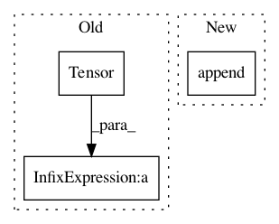

7f2dc586fb15ef4afc58e5468ee41c4339762876,pyannote/audio/embedding/approaches/triplet_loss.py,TripletLoss,fit,#TripletLoss#Any#Any#Any#Any#Any#Any#Any#Any#,331
Before Change
log_negative.append(pdist_npy[np.where(~same_speaker)])
log_delta.append(delta_npy)
log_embedding_X.append(fX.data / torch.Tensor(norm_npy.reshape((-1, 1))))
log_embedding_y.append(y)
// log loss
After Change
log_norm.append(norm_npy)
// log l2_normalized embeddings
log_embedding_X.append(l2_normalize(fX_npy))
log_embedding_y.append(batch["y"])
batch["fX"] = fX
batch = self.aggregate(batch)
In pattern: SUPERPATTERN
Frequency: 3
Non-data size: 3
Instances
Project Name: pyannote/pyannote-audio
Commit Name: 7f2dc586fb15ef4afc58e5468ee41c4339762876
Time: 2018-02-21
Author: bredin@limsi.fr
File Name: pyannote/audio/embedding/approaches/triplet_loss.py
Class Name: TripletLoss
Method Name: fit
Project Name: rusty1s/pytorch_geometric
Commit Name: ab1d74868183e211b8ae7aa155cdcbb5f43843d8
Time: 2020-05-27
Author: matthias.fey@tu-dortmund.de
File Name: examples/cluster_gcn.py
Class Name:
Method Name: test
Project Name: yhenon/pytorch-retinanet
Commit Name: b6443232013e8d248fe26f59630d43bc9688df06
Time: 2018-04-29
Author: yannhenon@gmail.com
File Name: losses.py
Class Name:
Method Name: loss